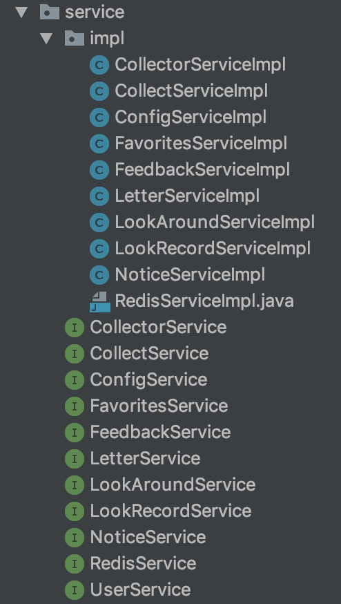

我正在做一个社交网站，目前暂定叫做：圈子。这个项目从产品到UI到前端、后端全部都由我一个人操刀。
后端使用了 Spring + SpringMVC + Mybatis 的框架组合，据说 SpringBoot 很流行，后面我会学一下。前端使用了 Vue 框架。产品设计移动端优先，使用了 墨刀 这款工具。
后端：servlet容器使用 tomcat，数据库使用 mysql，前端：UI框架使用 muse ui。
开发工具后端选择了 Intellj idea，前端使用 Sublime text 3。
代码托管使用 coding.net。
一般的项目流程都是：
- 产品设计
- UI设计
- 数据库设计
- 前端开发，后端开发
后端开发
服务器上安装Java
不使用open-jdk，去oracle官网下载jdk。
这里遇到的一个问题是，在官网点击accept之后，复制到下载链接，然后在服务器上wget该下载地址，发现不到一秒就下载完了，但是下载的文件不能解压！上网搜了一通，有不少人是在tar上找原因，说参数怎么怎么改，但试了多种参数搭配，查看了参数的说明，还是没解决问题，后来看到有人也遇到了相同的问题，结果是因为认证的问题，用浏览器下载的时候下载链接会多一个后缀。具体如下：
如果直接复制下载链接，得到的是：http://download.oracle.com/otn-pub/java/jdk/10.0.2+13/19aef61b38124481863b1413dce1855f/jdk-10.0.2_linux-x64_bin.tar.gz
通过chrome浏览器点击下载，然后ctrl+j打开下载界面（chrome://downloads），得到的真正的下载链接是：http://download.oracle.com/otn-pub/java/jdk/10.0.2+13/19aef61b38124481863b1413dce1855f/jdk-10.0.2_linux-x64_bin.tar.gz?AuthParam=1532949475_ca242a7f9181fc9c51d63b20d1465ae1
可以看到多了?AuthParam=1532949475_ca242a7f9181fc9c51d63b20d1465ae1这一段。
其实先用chrome点击一下下载，然后通过下载界面获取真正的下载链接，以前也是干过的，因为很多时候一个下载链接或者按钮并非真正的下载链接，而往往是一个js或者php来触发下载动作，同时完成对下载者的认证。所以，以后下载的时候还是先用chrome获取到真正的链接比较好。
这里再记录一个myeclipse破解过程中的一个问题，破解包里面有个crack.jar，用jdk10是会报错的！后来把jdk换成了1.8就可以了。
下载好jdk之后，就是配置Java环境了。配置很简单，首选/etc/profile。
在文件最后添加：
1 | JAVA_HOME=/usr/bin/jdk1.8.0_181/bin |
要注意的有两点，一是路径要到bin目录，因为可执行的java和javac文件都是在bin目录下；二是使用变量要加$，定义变量则不需要。
最后要注意的就是export命令的意思，stackoverflow一下：export makes the variable available to sub-processes.
翻译成中文就是说：export让子进程可以使用该变量。如果你不用export，那么你在shell里再新开其他shell，环境变量就都没了。
最后还得谈谈对PATH这个东西的一点深入理解。我居然蠢到以为只要把jdk整个目录扔到/usr/bin下面就能使用java和javac了，实际上只有PATH下的一层目录可以，子目录是不行的！为什么不做成子目录也可以扫描到？因为那样这个PATH机制就失去了意义，既然你子目录都可以扫，那我拿根目录做PATH，然后程序随便扔哪不就行了。从另一个角度来看，你遍历子目录找可执行文件是很耗时的，也是不科学的，因为将会有很多重名的文件，你让shell怎么知道你要执行哪个文件？而同一层目录的文件是不允许同名的，不存在冲突。
最后一个问题是为什么要配置环境变量，其实当然也可以不配置，配置的好处是可以省去那一串长长的路径。
tomcat配置
首先是去官网下载，下载一个tar.gz格式的，然后解压，然后也是配置环境，其实tomcat不用配置成环境变量也行，因为网站开关的次数是非常少的。
这里唯一要注意的问题就是你的服务器端口要打开，默认是8080端口。我一般买了服务器之后先把除ssh之外的所有端口统统关了。
mysql配置
mysql也需要去官网下载，这里记录一个问题，mysql8.0会与jdbc不兼容，所以版本太高也是容易出问题的，我换成mysql5.7就好了。
另外我在安装了centOS服务器上安装mysql也是费了很多功夫，刚开始是想去官网手动下载安装以及配置，刚开始的时候是参照这个博客：64位centos6.7安装mysql-5.7.9-linux-glibc2.5-x86_64.tar.gz。实在太麻烦了，而且配置过程中遇到太多的问题，我后来想linux的安装不是都统一用安装命令解决吗。于是我又上网翻，找到了这个教程：CentOS 7 yum 安装 MySQL5.7。总算是照着弄完了。但也同样遇到一个问题，就是官网上已经没有5.7版本的链接，只有8.0版本的。没关系下载的接口并没有撤，只要照着教程里的链接下载就行了：wget http://repo.mysql.com//mysql57-community-release-el7-8.noarch.rpm
最后总结一下安装和配置的方法论：
- 找到下载源，一般是去官网找，但也有找不到的情况，比如下载低版本的时候，比如找jdk的时候，我一般google关键字：jdk1.8 oracle，如果是想找最新的则输入：java oracle。tomcat则比较好，多个版本都提供而且一直都在更新。mysql则比较坑一点，在官网的yum下载入口中根本就没有低版本的链接。这时候只好找找看别人的教程里的安装低版本时候的链接，说不定那些下载链接都还有效。
- 配置，一般主要是配置环境变量，然后像mysql这种还需要初始化，但如果使用linux安装命令的话很多东西就都自动配置好了，所以最好不要自己去配置，除非你有充足的时间，想要学习一下配置过程。
远程连接mysql
用navicat远程连接mysql的时候遇到的问题：错误号：1130.
是因为权限问题造成的，解决办法：
进入mysql:mysql -u root -p
在mysql控制台中输入：GRANT ALL PRIVILEGES ON *.* TO 'myuser'@'%' IDENTIFIED BY 'mypassword' WITH GRANT OPTION;
其中.代表ip，这样写就是允许所有IP，然后myuser填你要登录的用户，%这里本来是填登录的设备，使用%表示任何设备都可以，mypassword填该用户对应的密码。
框架搭建
关于后台搭框架的过程，可以参考这篇文章：SSM框架整合（IntelliJ IDEA + maven + Spring + SpringMVC + MyBatis）
要注意的几点：
- tomcat肯定是要手动配置的
- Artifact也是要手动添加
- resource要手动标记，特别是协作开发的时候，搭好框架使用git上传到代码托管服务器，然后再clone下来之后，是需要你手动标记出resource文件夹的。
- 第三方库（非Maven远程托管的库）一定要放到
src -> main -> webapp -> WEB-INF -> lib目录下（没有就自己创建），否则在build的时候你会发现target中的lib没有第三方库（其实build过程对这些库的处理方式就是简单的拷贝，你手动拷贝也是可以的，但自动化才是最好的）
然后就是多熟悉一下配置，弄好自己需要的配置，弄清楚配置可以做哪些事，这很重要。
第三方库的管理问题
第三方库老是报错：classNotfound，这个库是用来发短信的：
在pom.xml中：
1 | <dependency> |
systemPath一开始我填的是${basedir}/lib/CCP_REST_SMS_SDK_JAVA_v2.6.3r.jar，始终是不行，我看了target里面的lib，没拷贝进去，就算我手动拷贝jar包进去还是classNotfound，后来换成这个路径存放jar之后终于能自动拷贝进target里面，问题也修复了。
mybatis-generator
数据库设计好之后，可以使用mybatis自动生成数据库操作相关的部分：mapper、mapping和dao。可以参考这篇文章：使用Mybatis-Generator自动生成Dao、Model、Mapping相关文件
下面三个文件放到同一目录，运行指令：java -jar mybatis-generator-core-1.3.7.jar -configfile generatorConfig.xml -overwrite
遇到的坑是overwrite实际上会出问题，如果想重新生成，还是应该先删掉生成的文件，再重新生成，如果覆盖可能会出问题。
.gitignore
使用intellj idea的插件.ignore来自动生成，选择java, maven, jetbrains, macosx等选项，生成相应的忽略项。
- 如果你有自己下载的第三方jar包，想通过git来维护，必须注释掉java选项生成的*.jar忽略项。
- 下载后的项目还要自己配置tomcat才能运行，要手动添加Artifacts，并手动标识resource文件夹。
代码结构
核心的模块只有四个，一个实体类模块 + 三个服务层级模块
- model（实体类，对应数据库中的一个表）
- controller（处理HTTP请求）
- service（衔接controller层和mapper层）
- dao（也称为mapper，处理数据库操作）
mapping文件（xml文件）放到resource里面。resource里面还包括：
- jdbc.properties
- log4j.properties
- memcached.properties
- mybatis-config.xml
- spring-job.xml
- spring-mvc.xml
- spring-mybatis.xml
- spring-memcached.xml
一般来说我们还需要：
- interceptor模块（拦截器）
- utils模块（放入你需要的各种工具类）
- task模块（定时任务）
- params模块（放入你需要的参数组合起来的类）
- config模块（放入你需要的配置类，比如常量配置）
以上只是我个人喜欢的代码分类方法或者说是比较常见的分类方法。
spring注解
spring主要就是靠注解来表明各种信息，使用起来非常方便，这样就可以让后台开发者专注于业务逻辑了。
Controller层
Controller层 类使用的注解：
- @Controller
- RequestMapping({“/user”})，大括号可以不打
或者你也可以用@RestController代替@Controller，查看源码可以知道@RestController是@Controller和@ResponseBody的组合，这样就不用在每个方法前面写@ResponseBody了。另外@RestController是REST API风格。
Controller层 属性使用的注解：
- @Resource，java自带的注解
- 也可以把
@Resource换成@Autowired，@Autowired和@Resource的区别是什么？
Controller层 方法使用的注解：
- @RequestMapping(value={“/login”}, consumes={“application/json”}, method=RequestMethod.POST)，大括号可以不打
- @ResponseBody，如果你使用了
@RestController这个注解就不用写了 - public JSONObject login(HttpServletRequest request, @RequestBody BasicInfo basicInfo)
方法中的参数的注解有好几种：
- @RequestBody，接收一个json
@PathVariables，接收路径中的动态部分，比如：
1
2
3
4
5(value="/changePrivacy/{id}/{type}")
public Response changePrivacy(@PathVariable("id") long id,@PathVariable("type") CollectType type) {
collectRepository.modifyByIdAndUserId(type, id, getUserId());
return result();
}@RequestParam
看下面一段代码：http://localhost:8080/springmvc/hello/101?param1=10¶m2=20
根据上面的这个URL，你可以用这样的方式来进行获取1
2
3
4
5public String getDetails(
@RequestParam(value="param1", required=true) String param1,
@RequestParam(value="param2", required=false) String param2){
...
}
@RequestParam 支持下面四种参数
- defaultValue 如果本次请求没有携带这个参数，或者参数为空，那么就会启用默认值
- name 绑定本次参数的名称，要跟URL上面的一样
- required 这个参数是不是必须的
- value 跟name一样的作用，是name属性的一个别名
Service层
service层一般分为两部分，接口部分和实现部分：

接口中一般没有注解，实现类里面的注解如下：
- @Service(“collectService”)，标注了Controller层要使用的service类的名称。
- @Transactional，[事务回滚}(https://blog.csdn.net/u013142781/article/details/50421904)
- @Autowired
mapping文件
mapping文件是mybaits用来映射数据库表的xml配置文件，具体语法看一个例子就知道了：
用户模块的逻辑
注册
请求参数校验
- 基本逻辑：注册必须先注销，检查session的keyId（keyId即数据库中的用户名），如果存在keyId，则是登录状态，系统拒绝服务。
- 用户名不能为空
- 手机号不能为空
- 用户名不能是已被占用的
- 手机号不能是已被占用的
- 密码不能为空
- 确认密码要与密码一致
- 图形验证码不正确
- 短信验证码错误
- 短信验证码过期
添加用户
- 设置用户ID
- 设置用户名
- 设置密码
- 设置手机
- 设置添加时间
- 设置更新时间
- 设置verifyCode（用于给密码加密）
手机号只能与一个账号绑定，一个账号只能绑定一个手机号，因而也可以用手机号登陆
密码使用MD5加密，由
用户ID+前端传过来的密码+verifyCode拼成。其中前端传过来的密码也需要经过MD5加密。后端加密的意义在于防止拖库
verifyCode的生成使用当前UNIX时间戳减去一个随机数，得到的long型整数，再拼接用户的手机号进行MD5加密
前端密码加密的意义在于，用户多站点使用同一密码，防止用户的其他账号被盗（社会学攻击）
前端加密并不能防止HTTP劫持，所以要防止盗号还是必须使用HTTPS协议
维护session
维护session的时候要去掉用户密码和verifyCode，其他的字段都可以设置进session
数据库重复插入问题
由于网络原因，客户可能连续推送了两条重复的数据，两条数据时间间隔非常小，因此导致了我们的
1 |
|
这个操作还没有执行完毕，第二条拥有相同数据的线程已经进入并通过了if的检验，导致数据库存储了两条相同的数据。后来我自己写了个100并发的多线程测试程序，发现100条相同数据中有40条被插入到了数据库里！天啦噜！！！因此确定了是多线程的并发导致了程序的判断逻辑失效。
考虑使用synchronized对方法添加同步锁，但是这样会导致其他正常数据的推送线程也被阻塞，影响效率。因此不采用。
即想提高效率不对方法添加synchronized，又想保证数据准确性，最后使用synchronized(siteId + uid) 在Controller层加锁(保证了只有重复数据被加锁,在Controller使用的原因是因为事务会在Service调用完毕才被提交，我实验过在Service同步，150并发会出现2条重复数据，因为事务还没来得及提交)
这种加同步锁的方法在
负载均衡下的多台应用服务器会失效
！因为就算Spring保证了对象是单例的，但是多台服务器肯定是多个对象！因此synchronized将无效。解决方法是在数据库层对该对接公司的唯一记录加select锁，这样就能保证数据的不重复性，但是会降低该公司推送数据的效率(相当于逐条推送)，但是公司与公司之间还是并行推送的。还有一个方法就是将业务逻辑写入存储过程，然后对存储过程加锁，这种方法太麻烦了，需求有变动就必须去修改存储过程，但是效率要比前者高得多。
总结：
在service层加锁会导致所有用户操作受阻，在controller针对用户id加锁可以锁住重复操作。但多台服务器的情况下会失效。